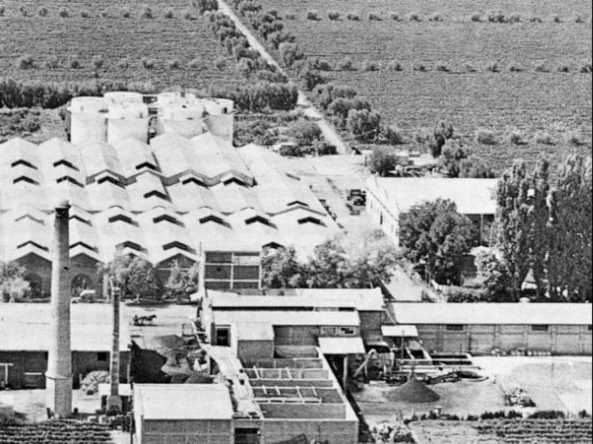

Historia

La bodega fue fundada en 1864, en Mendoza, Argentina, por Eloy Lecanda y Chaves, quien plantó sus 18.000 sarmientos de uvas de cabernet sauvignon, merlot, malbec y pinot noir provenientes de Burdeos (Francia) para producir brandy. Las variedades cabernet sauvignon y merlot eran usadas para los modernos vinos de la época. La etapa actual se inicia en 1982, cuando David Álvarez Díez adquiere la bodega y los viñedos al empresario venezolano Miguel Neumann. Desde ese año la familia Álvarez ha desarrollado una política de armonización de las corrientes innovadoras que exige el sector vinícola con el modo de hacer tradicional. Se ha ampliado la superficie de viñedos a 250 hectáreas, de las que el 80% son tempranillo o tinto fino, y el resto una combinación de cabernet sauvignon, merlot y malbec. En este sentido, la bodega ha establecido unos límites en el rendimiento de sus cepas, que no superan los 22 hectolitros por hectárea; la uva no es recogida si tiene menos de 13 grados; el número de vides por hectárea es de unas 2200; no se utiliza el regadío y se lleva un cuidadoso sistema de poda en verde para eliminar racimos con el fin de que cada cepa tenga una producción inferior a los dos kilos, concentrando en esta producción tan baja todos los elementos minerales y nutritivos que aporta el suelo.
Luego, entre los años 1984 y 1986, coinciden Cervecería Polar, Martell de Venezuela y Domaines Cordier, de Francia, para realizar un proyecto de investigación constituido por un viñedo y una bodega experimental, con el asesoramiento técnico del Instituto de la Uva; para lo cual se escogió la zona de Altagracia, población cercana a la ciudad de Carora y se creó, para ejecutar el proyecto la empresa Bodegas Pomar, con la unión de Polar y Martell. En 1986 se funda en Altagracia, al pie de la Sierra de Baragua, en estado Lara, un viñedo experimental de cuatro hectáreas, con el asesoramiento técnico del Instituto de la Uva, de la UCLA. Su objetivo principal fue consolidar y ampliar el paquete tecnológico para el cultivo de la vid, generado por dicho Instituto, y utilizarlo en el viñedo definitivo. Dichos estudios de clima y suelo a nivel nacional, determinaron que la mejor región para cultivar uvas para vino se encontraba en la zona semi-árida del estado Lara, ubicada entre El Tocuyo y Carora.